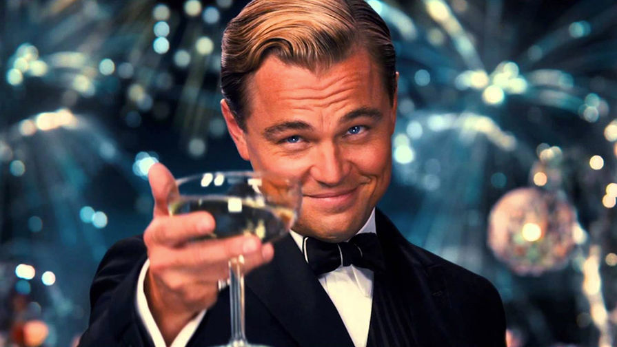
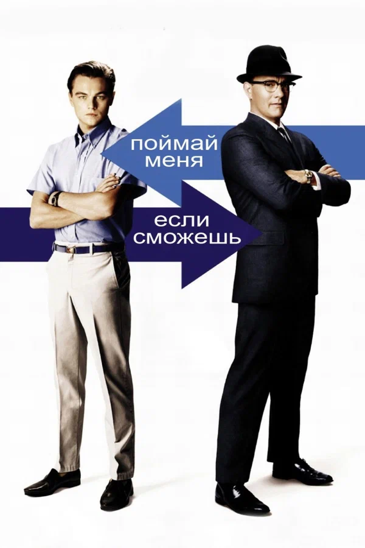

Остров проклятых
Два американских судебных пристава отправляются на один из островов в штате Массачусетс, чтобы расследовать исчезновение пациентки клиники для умалишенных преступников. При проведении расследования им придется столкнуться с паутиной лжи, обрушившимся ураганом и смертельным бунтом обитателей клиники.
Смотреть на Кинопоиск
Волк с Уолл-стрит
Джордан Белфорт основал одну из крупнейших брокерских контор в 1987 году, но десять лет спустя был осужден за отмывание денег и ряд прочих финансовых преступлений. Автор справился с алкогольной и наркотической зависимостью, выработанной за время махинаций на Уолл-стрит, написал две книги и теперь читает лекции о том, как достичь успеха.
Смотреть на Кинопоиск

Поймай меня, если сможешь
Фрэнк Эбегнейл успел поработать врачом, адвокатом и пилотом на пассажирской авиалинии – и все это до достижения полного совершеннолетия в 21 год. Мастер в обмане и жульничестве, он также обладал искусством подделки документов, что в конечном счете принесло ему миллионы долларов. Агент ФБР Карл Хэнрэтти пытается схватить Фрэнка и привлечь к ответственности за свои деяния, но Фрэнк всегда опережает его на шаг.
Смотреть на Кинопоиск